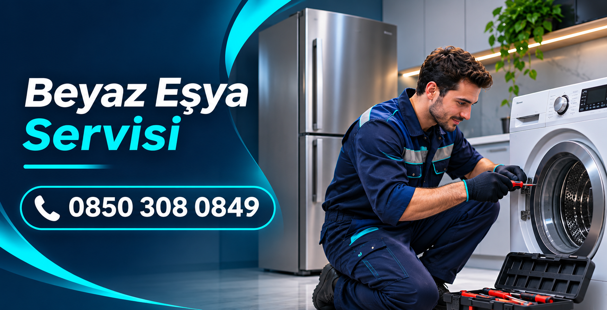

Çamaşır Makinesi Servisi
Çamaşır makinesinin çalışmaması, su almaması, su boşaltmaması, sıkma yapmaması, sesli çalışması veya programı tamamlamaması gibi sorunlar için servis bilgisi alabilirsiniz.
Çamaşır makinesi, bulaşık makinesi, buzdolabı ve fırın gibi beyaz eşyalarınızda yaşadığınız arıza ve çalışma sorunları için servis desteği hakkında bilgi alın. Bursa genelindeki servis talepleriniz için telefon veya WhatsApp üzerinden bize ulaşın.

Beyaz eşyalar günlük yaşamın önemli bir parçasıdır. Çamaşır makinesi, bulaşık makinesi veya buzdolabınız düzgün çalışmadığında sorunun belirlenmesi için cihazın durumunun değerlendirilmesi gerekir. Bursa beyaz eşya servisi talepleriniz için bizimle iletişime geçebilirsiniz.
Servis talebi oluştururken cihazın türünü, marka ve modelini, yaşadığınız sorunu ve bulunduğunuz ilçeyi paylaşabilirsiniz. Böylece talebiniz hakkında daha doğru bilgi verilebilir.
Çamaşır makinesinin çalışmaması, su almaması, su boşaltmaması, sıkma yapmaması, sesli çalışması veya programı tamamlamaması gibi sorunlar için servis bilgisi alabilirsiniz.
Bulaşık makinesinin yıkama yapmaması, suyu boşaltmaması, bulaşıkları temiz yıkamaması, su almaması veya programın yarıda kalması gibi sorunlarınızı iletebilirsiniz.
Buzdolabının yeterince soğutmaması, aşırı ses çıkarması, sürekli çalışması veya hiç çalışmaması gibi durumlarda cihazınızın sorununu bize anlatabilirsiniz.
Fırın ve diğer ev tipi beyaz eşyalarınızla ilgili servis ihtiyacınızda cihazın türünü ve yaşadığınız sorunu belirterek hizmet kapsamı hakkında bilgi alabilirsiniz.
Arızanın nedeni cihazın marka, model ve mevcut durumuna göre değişebilir. Sorunun doğru değerlendirilmesi için teknik kontrol gerekebilir.
Telefonla arayın veya WhatsApp üzerinden mesaj gönderin.
Cihaz türünü, marka-model bilgisini ve yaşadığınız sorunu paylaşın.
Bulunduğunuz ilçe, servis uygunluğu ve hizmet kapsamı hakkında bilgi isteyin.
Bursa genelindeki servis ağımızla aşağıdaki bölgelerde servis taleplerinizi alıyoruz. Bulunduğunuz bölge için uygunluğu telefonla teyit edebilirsiniz.
Osmangazi beyaz eşya servisi ve Nilüfer beyaz eşya servisi talepleriniz için bize ulaşın.
Yıldırım beyaz eşya servisi ve Gürsu beyaz eşya servisi hakkında bilgi alın.
Kestel ve Mudanya bölgelerindeki beyaz eşya servis taleplerinizi iletebilirsiniz.
Gemlik ve İnegöl bölgelerinde servis uygunluğu için bizimle iletişime geçebilirsiniz.
Osmangazi, Nilüfer, Yıldırım, Gürsu, Kestel, Mudanya, Gemlik ve İnegöl bölgelerindeki servis talepleriniz için bizimle iletişime geçebilirsiniz.
Çamaşır makinesi, bulaşık makinesi, buzdolabı, fırın ve diğer ev tipi beyaz eşyalarınız için bilgi alabilirsiniz.
0850 308 08 49 numarasını arayabilir veya WhatsApp üzerinden mesaj gönderebilirsiniz.
Cihaz türü, marka-model, arızanın kısa açıklaması ve bulunduğunuz ilçe bilgilerini paylaşmanız yeterlidir.
Çamaşır makinesi, bulaşık makinesi, buzdolabı ve diğer beyaz eşyalarınızla ilgili servis talepleriniz için bizi arayın veya WhatsApp üzerinden yazın.